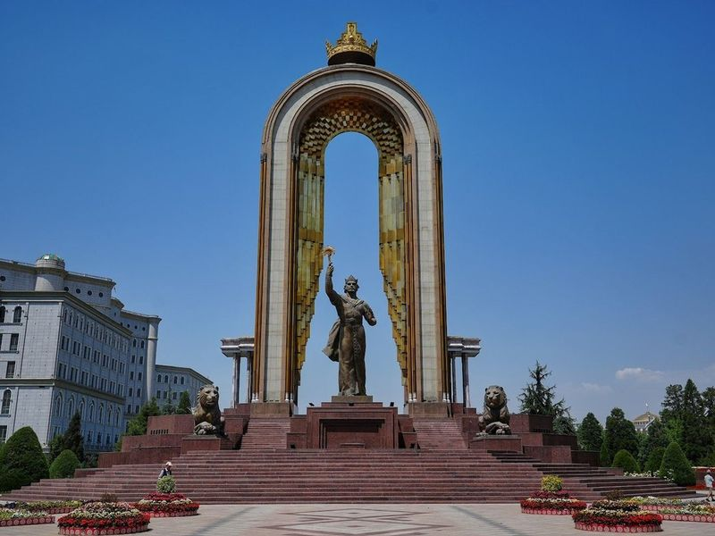
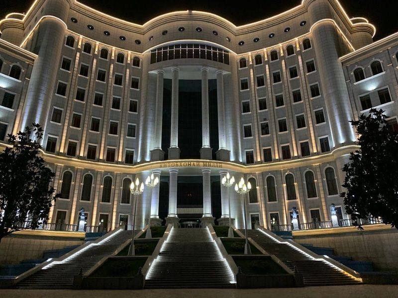
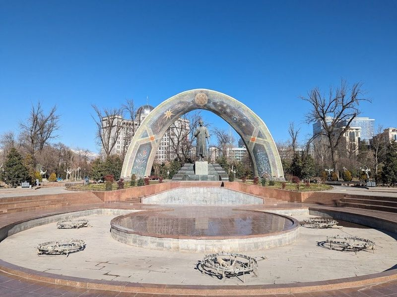
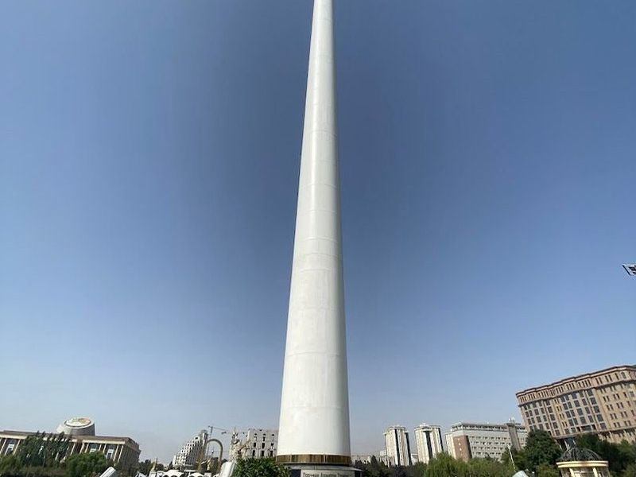
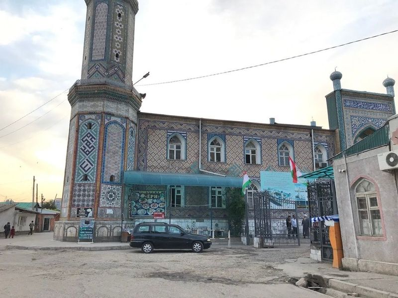
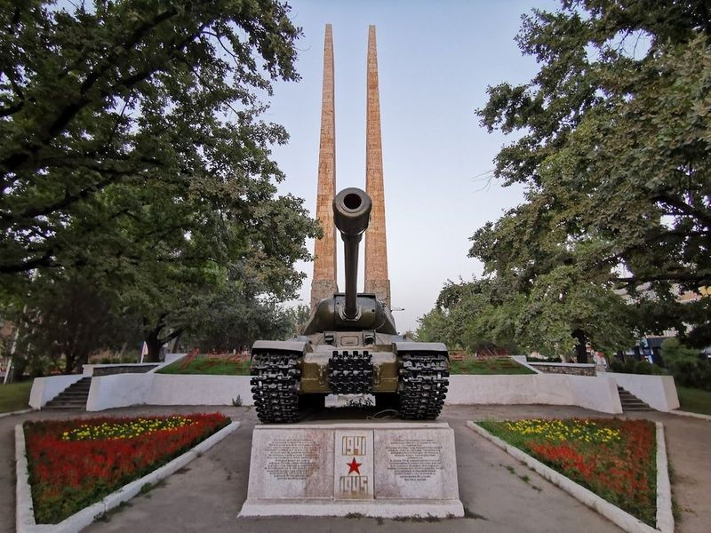
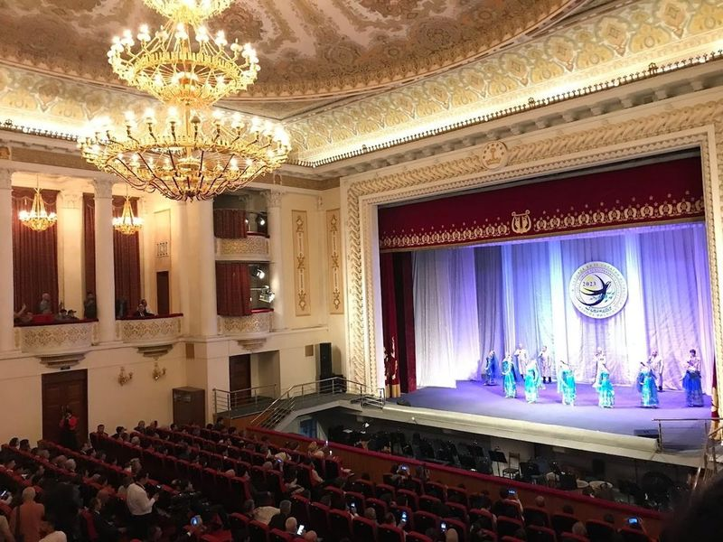
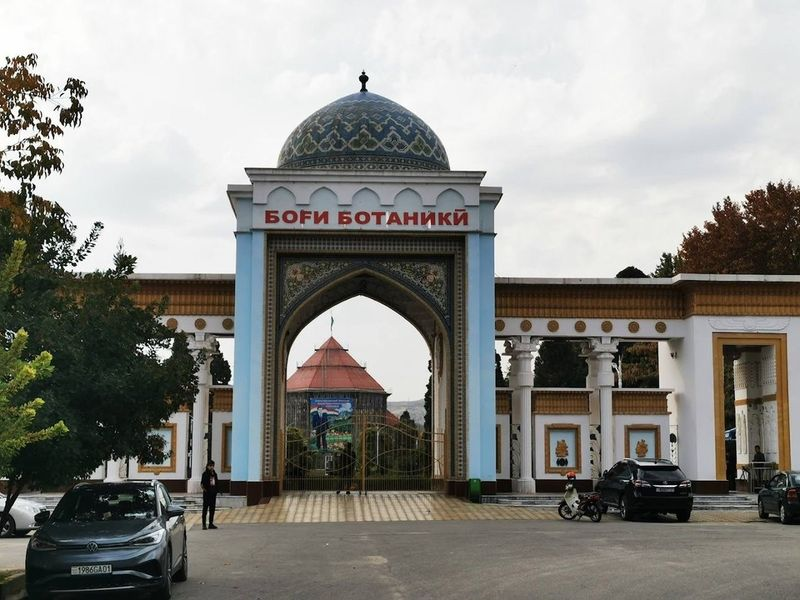
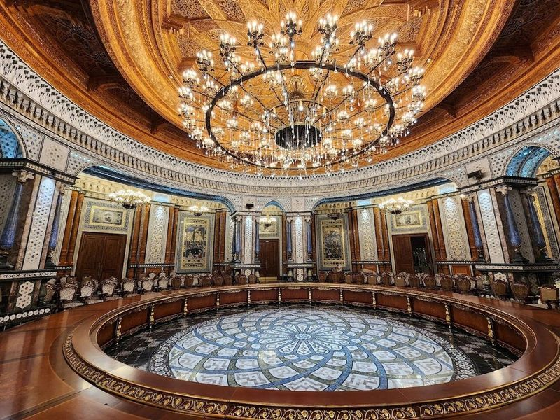
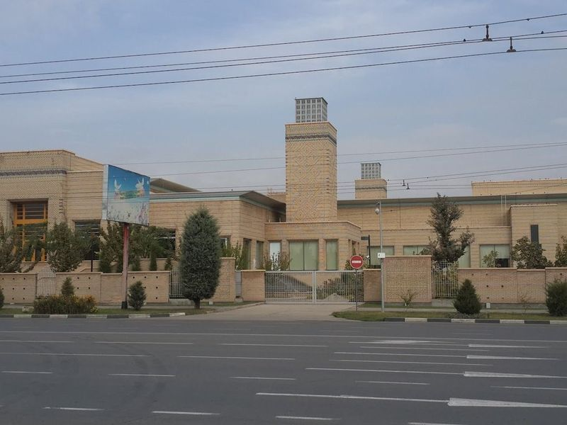

Explore Dushanbe
A Brief History
Dushanbe developed from a small market village named for its Monday bazaar and became capital of Soviet Tajikistan in 1924. Wide Stalin-era avenues, parks, and neoclassical government buildings were expanded after independence in 1991. Museums, the flagpole square, and nearby Hissar Fortress illustrate how the city administers a mountainous republic at the crossroads of Persian and Central Asian cultural traditions.
Attractions Map
Top Sights & Activities

Monument of Ismail Samani
The Monument of Ismail Samani is a significant landmark located in the heart of Dushanbe, Tajikistan. It stands as a tribute to the national hero and ancient king, Ismoil Somoni, celebrated across the country. The monument, towering over 25 meters high and adorned with gold decorations, was erected in 1999 to honor the 1100th anniversary of the state of the Samanids.

National Library of Tajikistan
When in Dushanbe, make sure to explore the impressive National Library of Tajikistan, a nine-story architectural marvel shaped like an open book. It is recognized as the largest library in Central Asia and houses over three million books. The building features 22 busts of local historical figures and offers separate sections for various subjects including medical, law, Indian literature, Braille materials, and technology-driven publications.

Rudaki Park
Rudaki Park, situated in the heart of Dushanbe, Tajikistan, is a meticulously designed public park surrounded by significant landmarks and structures. The park boasts fountains, sculptures, manicured lawns, and an array of vibrant flowers. It is home to the giant flagpole and a well-photographed sculpture of Rudaki with views of the city's buildings. This makes it an ideal spot for a summer outing.

Flagpole of Tajikistan
Dushanbe, the capital city of Tajikistan, is home to the impressive Dushanbe Flagpole, one of the tallest free-standing flagpoles globally. Standing at a towering height of 165 meters, this monumental structure proudly displays Tajikistan's national flag, which measures 60 meters in length and weighs 420 kilograms.

Hаji Ya'qub Mosque
The Haji Ya'qub Masjid in Dushanbe is a magnificent and significant religious site, as well as an architectural wonder. It stands as a tribute to Mawlana Yaqub-Charkhi, a 15th-century Sufi order sheikh. This beautiful mosque can accommodate up to 3000 worshippers and offers a serene atmosphere for spiritual reflection.

Victory Monument
Victory Monument, located in Dushanbe, Tajikistan, is a significant tribute to the Great Patriotic War. As of March 2024, it is undergoing relocation within the city. The tank and some commemorative signs have been removed, leaving behind two impressive pillars adorned with stone engravings that capture various wartime moments—these are reminiscent of Egyptian art in their style.

Ayni Opera House
Ayni Opera House, named after a prominent Tajik poet, boasts glamorous and imposing architecture with tall white columns. Constructed in the 1940s, it is a cultural gem located in the center of Dushanbe city. The building hosts various opera shows, ballet performances, and classical concerts throughout the year. Even if you're not a fan of opera or ballet, visiting the exterior is rewarding.

Botanical Garden
The Botanical Garden in Dushanbe is a peaceful and well-kept sanctuary that showcases an impressive array of plants and trees from various corners of the globe. It's a perfect spot for a leisurely walk, a family picnic, or simply basking in the serene surroundings. The garden features well-maintained paths, ancient trees providing ample shade, and even a charming pond. Nature enthusiasts will find delight in exploring the diverse collection of flora on display here.

Navruz Palace
In the heart of Dushanbe, Tajikistan's capital city, lies the captivating Navruz Palace. This cultural gem pays homage to the country's rich heritage and serves as a symbol of national identity, particularly celebrating the significant Navruz festival. Originally intended as a teahouse, it was transformed into a grand palace during construction due to its interior crafted by artisans from across Tajikistan.

The Ismaili Centre, Dushanbe
The Ismaili Centre in Dushanbe, Tajikistan is a captivating cultural and religious landmark nestled in a tranquil neighborhood. This architectural gem, influenced by various Islamic traditions, serves as a community center and prayer hall for the Ismaili Muslim community. Guided tours offer insights into its unique design and rich history. Visitors praise the warm welcome from volunteers who provide informative tours and access to the center's library.